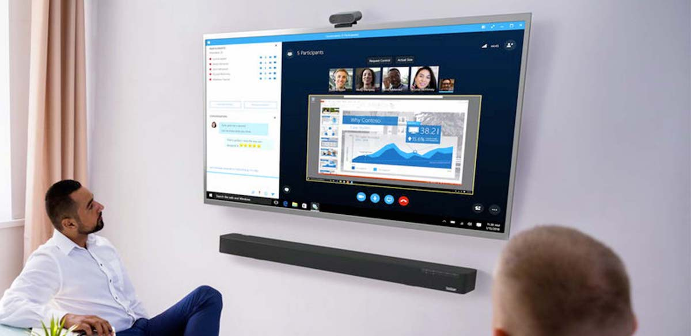
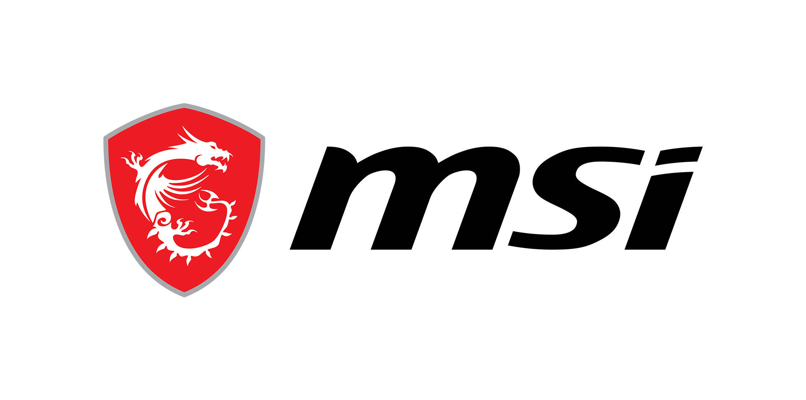

Articoli
Minaccia Killnet dalla Russia all’Italia
Lunedì 30 Maggio, questa la data in cui su Telegram il gruppo di hacker Killnet aveva annunciato di voler attaccare alcuni importanti siti italiani da quelli istituzionali fino a quelli di banche o altri istituti di rilievo. Tante parole, tante minacce ma in molti si sono chiesti, cos’è successo? Questo attacco ci è stato davvero? Partiamo con calma dicendo che ben prima del 30 Maggio alcuni siti italiani avevano registrato delle fortissime difficoltà. Ad esempio, il sito del Senato non era più raggiungibile a causa delle troppe richieste di accesso.
Proprio questa tipologia di attacco è quello “prediletto” da Killnet, il famoso “attacco DDoS”. Un’azione atta a creare un numero infinito di tentativi di accesso ad un unico sito. Colui che viene attaccato, quindi, si ritrova a dover gestire questa difficile situazione e spesso si ritrova a “cadere” per i troppi tentativi di accesso.
Si sono registrati alcuni rallentamenti, ma nessun tentativo di bucare la cybersecurity sembra essere andato a segno. Polizia postale e Acn non abbassano però il livello d’attenzione: i danni più gravi, lo sanno bene le strutture del perimetro di difesa cyber, arrivano dagli attacchi non annunciati.
In mattinata era scattato l’allarme, subito rientrato, per un blocco dei servizi informatici agli uffici delle Poste italiane. L’azienda ha però parlato di un “disguido tecnico” dovuto ad un “aggiornamento del sistema“. Stessi rallentamenti si sono verificati, per lo stesso motivo, sul sito della Presidenza della Repubblica.
Sconti fino a 500 euro con le offerte dell’Acer Store
È tempo di offerte High-Tech sull’Acer Store che propone tanti sconti su notebook, monitor, PC desktop e accessori fino al prossimo 19 di giugno. Grazie alla nuova serie di offerte sarà possibile acquistare i prodotti Acer con uno sconto massimo di 500 euro. Il risparmio accessibile con queste offerte è assicurato e le opportunità per individuare il prodotto più adatto alle proprie esigenze non mancano. Vediamo quali sono le migliori offerte disponibili sull’Acer Store con la nuova campagna promozione offerte High-Tech.
Le offerte proposte dallo store di Acer continuano e diventano High Tech. La nuova serie di promozioni messe a disposizione da Acer consente di acquistare i prodotti in offerta potendo beneficiare di uno sconto massimo di 500 euro. Per scoprire quali sono le offerte più convenienti è possibile accedere al link che trovate qui di sotto che vi condurrà alla pagina dedicata della promozione.
Sottolineiamo, per i prodotti in offerta, lo sconto viene applicato automaticamente nel carrello. Di conseguenza, i prezzi visualizzati sono da scontatore e l’importo dello sconto è indicato chiaramente nel riquadro al di sotto del nome del prodotto. È possibile acquistare anche più prodotti a prezzo scontato, beneficiando quindi della promozione in modo ancora maggiore.
Da notare che sui prodotti in sconto sull’Acer Store c’è la possibilità di sfruttare la consegna gratuita (nel giro di pochi giorni lavorativi). Per completare l’acquisto è possibile scegliere il pagamento in 3 rate senza interessi con Klarna o PayPal. Ecco, quindi, tutte le offerte High Tech disponibili sullo store Acer:
La nuova marketing manager di Lenovo Italia

In Lenovo Valentina Fracassi lavora già dal 2019, quando vi è entrata in qualità di consumer marketing manager. Emanuele Baldi, ED & GM, Italy and Israel, Lenovo si è detto molto orgoglioso del percorso di crescita lavorativa da lei fatto all’interno del Gruppo in Italia. Prima ancora, però, Valentina Fracassi ha comunque lavorato in ambito marketing per aziende operanti nel settore dell’elettronica di consumo, quali Asus e Unicorn.
Ha così approfondito competenze relative al marketing dopo averne acquisite di altre nel campo della comunicazione: si è infatti formata in comunicazione, conseguendo una laurea all’Università Cattolica del Sacro Cuore di Milano, e in questo stesso ambito ha svolto le sue prime esperienze lavorative, come sales & event manager per una società di eventi prima e come key account per un’agenzia di comunicazione poi.
Come marketing manager di Lenovo in Italia, Valentina Fracassi avrà il compito di dirigere il marketing strategico dell’azienda, per il comparto dei PC e degli smart device, per rafforzare il livello di brand awareness raggiunto, migliorare la customer experience e, anche, ottimizzare gli investimenti pubblicitari. «Sono convinto», ha affermato Emanuele Baldi – a cui la nuova marketing manager dovrà far riferimento – «che, nel suo nuovo ruolo, Valentina insieme all’intera organizzazione marketing contribuirà a consolidare il brand di Lenovo».
«Sono entusiasta della nuova sfida che mi attende, in una frase cruciale della trasformazione di Lenovo», ha commentato – come si legge nella nota stampa diffusa – la stessa Valentina Fracassi, dicendosi pronta a lavorare con l’intero team marketing per approfittare di tutte le opportunità offerte dal mercato e migliorare le attività già messe in atto dal Gruppo, per contribuire a un’ulteriore crescita dell’azienda.
Top 3 Laptop MSI

MSI GS66 Stealth
Esiste uno stereotipo molto diffuso riguardo i portatili da gaming, ovvero che si tratti di dispositivi simili a un grosso mattone che si fa fatica a portare in uno zaino. Msi, propone alcuni modelli in questo stile, ma MSI GS66 Stealth è esattamente l’opposto. Grazie ad uno spessore ridotto a soli 18,3-20 mm e un peso di 2,1 kg, questo portatile permette di utilizzare le nuove GPU RTX 3070 in mobilità senza alcuna fatica.
Inoltre, il design rinnovato è tutto nero con accenti dorati e illuminazione RGB. Se ve lo potete permettere, con questo dispositivo andate sul sicuro, anche se il nostro consiglio è quello di puntare sulle versioni con core i7 che producono generalmente meno calore.
MSI GT76 Titan
L’ultima versione del portatile titano di MSI, che in questa generazione si colloca sotto la sigla “GT76 Titan”, è una vera macchina da guerra. Adatto a qualsiasi tipologia di gioco o lavoro, non è lo stereotipo del portatile sottile da tenere sotto il braccio mentre ci si sposta da un ufficio all’altro. Al contrario, stiamo parlando di un blocco da 39,7 x 33 cm, con uno spessore di quasi 4 cm e un peso di oltre 4 kg, alla quali vanno aggiunti ben 2 alimentatori da 230W, per un peso totale di ben 6kg.
Questo modello è un desktop replacement che può essere utilizzato per qualunque attività, ma non è pensabile volerlo usare in mobilità, vi permetterà più che altro di spostarvi da diverse sedi e residenze con uno sforzo minimo rispetto a quanto fareste con un PC desktop dotato di monitor. Le sue espandibilità e praticità compensano perfettamente l’ingombro e non vi farà rimpiangere un computer fisso.
MSI GF63 Thin
I portatili da gaming possono essere davvero costosi, soprattutto da quando la gamma RTX di Nvidia è arrivata. Assemblare un dispositivo così sottile e leggero con hardware potente può diventare costoso, pertanto teniamo in considerazione anche qualche modello dall’ottimo rapporto qualità prezzo.
MSI GF63 non è il portatile più performante sul mercato, ma grazie ad un hardware ben bilanciato che comprende una scheda video GeForce GTX 1650 (liscia o Ti) sarete in grado comunque di giocare alla maggior parte dei titoli, con qualche limitazione nei dettagli o nei frame rate. Considerando il design attraente e le cornici super sottili non è difficile capire perché si tratti di un ottimo acquisto.
 Assistenza PC
Assistenza PC